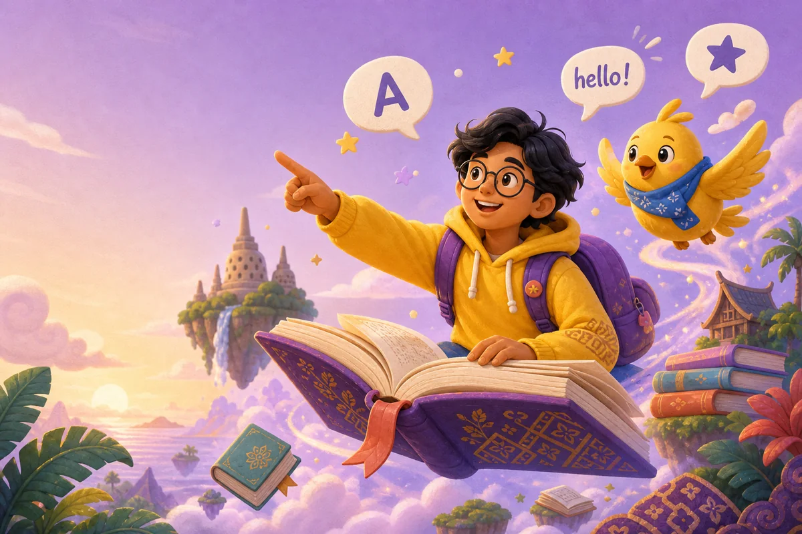

🔥 DAILY QUEST
Siap naik level?
Selesaikan 3 misi sebelum tengah malam.
+60 XP
Petualangan kecil setiap hari. Main game, bangun streak, dan mulai pede ngomong Inggris dari nol, santai aja.

0 / 500 XP
Selesaikan 3 misi sebelum tengah malam.
Nggak harus urut. Ikuti rasa penasaranmu.
Lima menit pun tetap dihitung. Yang penting muncul.
Pelajari formula, fungsi, timeline, contoh positif, negatif, pertanyaan, dan kesalahan umum untuk setiap bentuk tense.
Practice clear emails, meetings, negotiation, presentations, interviews, and professional networking.
Score out of 100 with a saved result.
Watch the full lesson, take notes, then try the Professional Capability Test while the ideas are fresh.
Open directly on YouTube ↗Setiap ronde makin panjang. Selesaikan sebelum lima menit habis.
Susun menjadi kalimat yang benar:
Iya. Materi dan latihan di halaman ini bisa dipakai gratis selama websitenya masih ada.
Nggak. Progress tamu tersimpan di perangkatmu. Akun baru diperlukan jika nanti ingin sinkron lintas perangkat.
Cocok. Kamu bisa mulai dari greetings dan kosakata sehari-hari, lalu lanjut sesuai ritmemu.
Gratis. Tanpa login. Cuma butuh 5 menit.